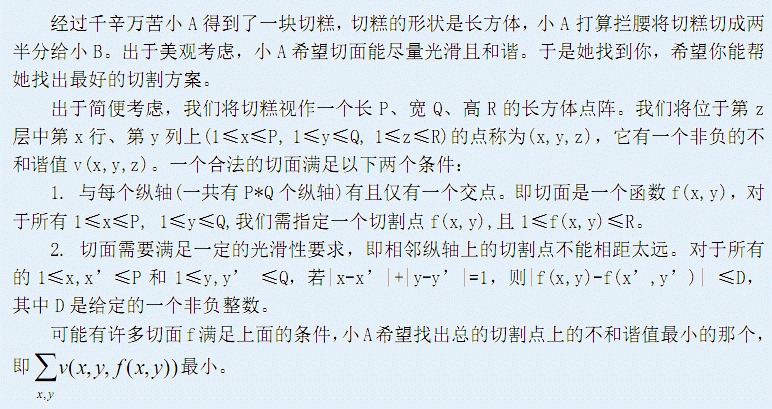

第一行是三个正整数P,Q,R，表示切糕的长P、 宽Q、高R。第二行有一个非负整数D，表示光滑性要求。接下来是R个P行Q列的矩阵，第z个 矩阵的第x行第y列是v(x,y,z) (1≤x≤P, 1≤y≤Q, 1≤z≤R)。 100%的数据满足P,Q,R≤40，0≤D≤R，且给出的所有的不和谐值不超过1000。
仅包含一个整数，表示在合法基础上最小的总不和谐值。
2 2 2 1 6 1 6 1 2 6 2 6
6
最佳切面的f为f(1,1)=f(2,1)=2,f(1,2)=f(2,2)=1